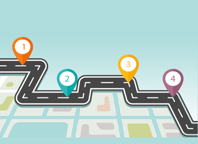

Hoje sabemos a dificuldade que tem uma instituição de ensino indicar um transporte escolar de qualidade e confiável para os seus clientes

Hoje para um profissional do transporte escolar capitar clientes em uma instituição de ensino não é frâncio.

Com tanta dificuldade para uma instituição de ensino e para o profissional do transporte escolar, a Uniescolar surgiu para facilitar a união entre ambos.